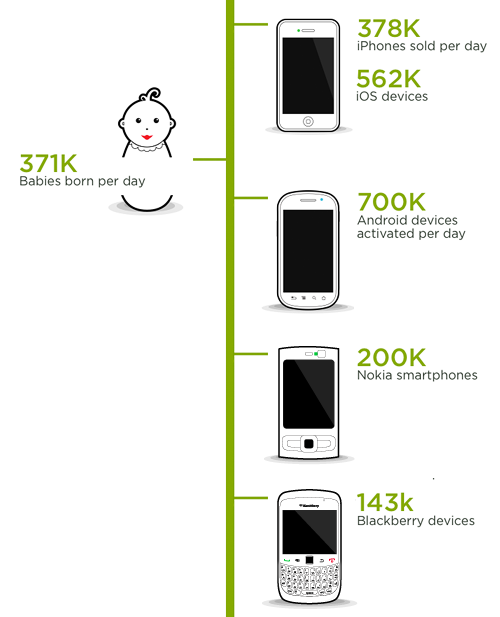
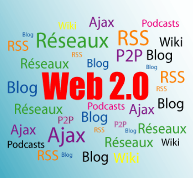

Proyecto de Software
Cursada 2014
Temario de la materia
Hoy Empezamos ...
Temario de Hoy
- La web
- Arquitectura
- Web 2.0, web semántica ...
- Definición de URL/URI
- Protocolo HTTP
- Mensajes
- Lenguaje HTML
- HTML 5
Arquitectura Web Básica

Internet y la web
RFCs – Request for Comments
Estadísticas de uso de Internet
La Web: creada por Tim Berners-Lee
W3C – El consorcio de la web
- http://www.w3c.org
- Desarrollo de estándares y guías.
La misión del W3C es:
Guiar la Web hacia su máximo potencial a través del desarrollo de protocolos y pautas que aseguren el crecimiento futuro de la Web.
La evolución de la web
Tendencias ...
La World Wide Web
- La Web es una red de recursos de información.
- Se basa en tres pilares básicos:
- El concepto de URL/URI
- El protocolo HTTP
- El lenguaje HTML
URL/URI - RFC 2396/3986
- Una URI -“Uniform Resource Identifier”- es un mecanismo por el cual se identifica todo recurso accesible en la web.
- Una URL -“Uniform Resource Locator”- permite ubicar un recurso a través de su ubicación.
- Típicamente una URL se compone de:
- el esquema o protocolo utilizado para acceder al recurso
- el nombre de dominio de la máquina que almacena el recurso
- el nombre del recurso mismo dado como un camino dentro de la máquina (recurso)
URL/URI - RFC 2396/3986 (cont.)
Ejemplos
http://www.servidor.com.ar/especificacion#parte3
http://www.taller.com.ar/info.php?id=12&qq=11
../cursada2009/mejores/junio.htm
mailto:proyecto@info.unlp.edu.arURL Encoding
- Las URLs se transmiten en ASCII.
- Algunos caracteres deben convertirse.
- Ejemplos:
/Clase 1/EjemplosClase1/Ejemplo con enlaces.html
Luego:
../Clase%201/EjemplosClase1/Ejemplo%20con%20enlaces.html
Protocolo HTTP
- Una transacción HTTP consta de 4 pasos:
inicio conexión - solicitud - respuesta - cierre conexión
- Protocolo sin estado
- Clientes web: Firefox, IE, Chrome, Opera, ....
- Servidores web: Apache, IIS, Nginx, etc, ....
Protocolo HTTP
Versiones:
- HTTP 1.0 - RFC 1945
- HTTP 1.1 - RFC 2068/2616
- HTTP 2.0 - Internet Draft
La mayoría de los navegadores y servidores web soportan 1.0 y 1.1
http://www.rfc-base.org/txt/rfc-1945.txt http://www.w3.org/Protocols/rfc2616/rfc2616.txt
Mensajes HTTP
Solicitudes
- GET: retorna la información que está identificada por la URI-solicitada.
- HEAD: retorna la información del header del servidor.
- POST: en general se utiliza para la entrega o envío de formularios que son completados en forma interactiva por un usuario. Esta es la única solicitud que envía un cuerpo en el mensaje.
Respuestas
- El servidor retorna un código que indica el estado de la solicitud (por ejemplo: 200 y el recurso)
Errores típicos: 404, 503, ...
Diferencias entre GET y POST
Mensaje HTTP con GET:
GET /index.php?nombre=pepe&seccion=1 HTTP/1.0 Host: www.servidor.com User-Agent: Mozilla/4.5 [en] Accept: image/gif, image/jpeg, text/html Accept-language: en Accept-Charset: iso-8859-1
Diferencias entre GET y POST
Mensaje HTTP con POST:
POST /index.php HTTP/1.0 Host: www.servidor.com User-Agent: Mozilla/4.5 [en] Accept: image/gif, image/jpeg, text/html Accept-language: en Accept-Charset: iso-8859-1 nombre=pepe&seccion=1
El Lenguaje HTML
Lenguaje HTML
- HTML - “HyperText Markup Language”- especifica el formato de las páginas web, separando el contenido de las páginas de su formato de presentación.
- Fue creado en los laboratorios CERN por Tim Berners-Lee.
- Define un conjunto de símbolos (etiquetas o tags) que especifican la estructura lógica de un documento y de todos sus componentes.
- Es independiente de la plataforma.
- Su código es interpretado por los clientes web.
HTML: Un poco de historia...
Versión | Año de publicación |
|---|---|
HTML + | 1993 |
HTML 2.0 | 1995 |
HTML 3.2 | 1997 |
HTML 4.01 | 1999 |
HTML 5 | RC 31 de julio de 2014 |
Lenguaje HTML
Formato general
<!DOCTYPE> | Indica el tipo de documento HTML o XHTML para validar la sintaxis |
<html> | Inicio del documento |
<head> </head> | Encabezado |
<body> </body> | Cuerpo |
</html> | Fin del documento |
Mi primera página HTML
<!DOCTYPE html> <html> <head> <meta http-equiv="Content-Type" content="text/html; charset=UTF-8"> <title>Título</title> </head> <body> </body> </html>
HTML – Sintaxis General
La cláusula DOCTYPE: - Primera línea del documento - Indica la forma en que se validará el documento
Ejemplos:
<!DOCTYPE html>También puede ser:
<!DOCTYPE html PUBLIC "-//W3C//DTD XHTML 1.0 Strict//EN" "http://www.w3.org/TR/xhtml1/DTD/xhtml1-strict.dtd"> <!DOCTYPE html PUBLIC "-//W3C//DTD XHTML 1.0 Transitional//EN" "http://www.w3.org/TR/xhtml1/DTD/xhtml1-transitional.dtd">
El encabezado
Delimitado por <head> y </head> Algunas componentes... <title>: Corresponde al título de la página. <link>: Indica una relación entre el documento y algún otro objeto de la WEB. <meta>: Meta-información sobre el documento
Campos Meta
- Se usan para identificar meta-información sobre el documento.
- Son usados por buscadores para mejorar la calidad de los resultados en las búsquedas.
Ejemplo:
<meta name="description" content="Proyecto de software" /> <meta name="author" content="Claudia Banchoff-Einar Lanfranco" /> <meta name="keywords" content="meteorología, clima">
Campos Meta (cont.)
O mejor..
<meta name="keywords" lang="es" content="deportes, tenis, futbol"> <meta name="keywords" lang="en" content="sports, tennis, soccer">
Campos Meta (cont.)
- Sugerencias para los robots de búsquedas...
<meta name="robots" content="noindex, nofollow, noimageindex">
o:
<meta name="GOOGLEBOT" content="noindex, nofollow">
- http-equiv permite predeterminar el diálogo entre cliente y servidor
<meta http-equiv="Content-Type" content="text/html;charset=ISO-8859-1" />
El cuerpo del documento
- Delimitado por <body> y </body>
- Encabezados: <h1>..</h1>,<h2>..</h2>, ...., <h6>..</h6>
- Párrafos: <p>..</p>.
- Comentarios: <!-- el comentario -->
- Imágenes:<img src=”archivo" alt="descripcion"/>
- Enlaces: <a>..</a>
- Listas: <ul>..</ul>
- Tablas, formularios... y muchos elementos más.
Consideración Importante
- El documento tiene una estructura y una forma de visualización
- Estructura: usando las etiquetas HTML más apropiadas.
- Visualización: usando hojas de estilo
- Ver sitio csszengarden
A tener en cuenta ...
- Referencias relativas y absolutas
<img alt="Relativo" src="./imagenes/logo.png"> <img alt="Absoluto" src="/home/diego/imagenes/logo.png">
A tener en cuenta ...
- El set de caracteres
- Los navegadores soportan varios conjuntos de caracteres: ASCII, Unicode, ISO-8859-1 ...
- Podemos usar el campo meta http-equiv:
- <meta http-equiv="Content-Type" content="text/html; charset=ASCII">
- <meta http-equiv="Content-Type" content="text/html; charset=UTF-8">
- Veamos el sitio de Lihuen
Entidades HTML
Se las utiliza para representar símbolos especiales que no son representados de la misma manera en todos los set de caracteres: símbolos matemáticos, caracteres griegos, letras acentuadas, etc.
Forma general: &nombreEntidad;
Ejemplos:
& (&) - © (©) - < (<) - > (>) -" (") ... á (á) - é (é) - ....
Nos independizamos del set de caracteres del navegador
Especificando Colores
- Se utiliza notación RGB.
- Forma general: #RRGGBB
Los Formularios
- Se definen con <form> </form>
- Define y agrupa los campos que forman el formulario.
Algunos atributos...
- action: Especifica la URI donde será enviado el formulario.
- method: Especifica la forma en que se transferirán los datos: get y post
<form method="post" action="info.php"> ..... </form>
Los Formularios en la Arquitectura Web
Formularios Usando GET
- Si en el formulario se definen campos nombre y seccion, por ejemplo
- Mensaje HTTP con GET:
GET /index.php?nombre=pepe&seccion=1 HTTP/1.0 Host: www.servidor.com User-Agent: Mozilla/4.5 [en] Accept: image/gif, image/jpeg, text/html Accept-language: en Accept-Charset: iso-8859-1
Formularios Usando POST
- Si en el formulario se definen campos nombre y seccion, por ejemplo
- Mensaje HTTP con POST:
POST /index.php HTTP/1.0 Host: www.servidor.com User-Agent: Mozilla/4.5 [en] Accept: image/gif, image/jpeg, text/html Accept-language: en Accept-Charset: iso-8859-1 nombre=pepe&seccion=1
GET vs. POST
Los Campos del Formulario
- Formulario típico: ejemplo-formulario
- Elementos nuevos de HTML5 (InputNumer): ejemplo1-formulario-HTML5
- Elementos nuevos de HTML5 (Color y Date): ejemplo2-formulario-HTML5
HTML 5
- Se viene trabajando desde el año 2004.
- Ya es Candidato a Recomendación.
- Define nuevos elementos y otros pasan a ser obsoletos.
- Pone el foco en la semántica web.
- Incorpora varias APIs. interesantes.
HTML 5 (cont.)
- Algunos elementos para contenido multimediales:
- <audio>: Distintos tipos de sonidos, música, streams de audio.
- <video>: Contenido de video.
- <embed>: Contenido embebido, por ejemplo un plugin
- Ejemplo: muestro-video
HTML 5 (cont.)
- Algunos elementos estructurales: <article>, <header>, <footer>, <nav>, <section>, etc.
- Nuevos elementos para formularios: <datalist>, <keygen>, <output>
- Algunos nuevos tipos de input: tel, search, url, email, date, number, color
- El elemento canvas: ver-ejemplo
web, web 2, web semántica ...¿?
La web 2
- En 2004, por primera vez mencionado por Tim O'Reilly
- Los usuarios como productores de contenidos
- Herramientas típicas: blogs, wikis, redes sociales...
La web semántica
- Incorporar metadatos para agregar significado a la información del documento HTML.
- Se debe seguir un formalismo adecuado para que se lo pueda procesar en forma adecuada.
- En la materia, sólo veremos algunos aspectos sobre HTML semántico...
Referencias (1)
- Etándares web: http://www.w3.org/community/webed/wiki/Main_Page
- Lenguaje HTML: http://www.w3c.org/html
- Motores de búsqueda: http://www.robotstxt.org
- Set de caracteres: http://www.w3schools.com/tags/ref_charactersets.asp
- URLs vs URI: http://asg.web.cmu.edu/rfc/rfc3986.html#sec-1.1.3
- Algunos Libros en la web: http://www.librosweb.es
- Tutoriales básicos: http://www.w3schools.com/html/tryit.asp?filename=tryhtml_intro